Life, lately.
Movement, food, friends, music, flowers, and the sky doing something unexpectedly beautiful. Choose a mood, or let chance pick a photo for you.
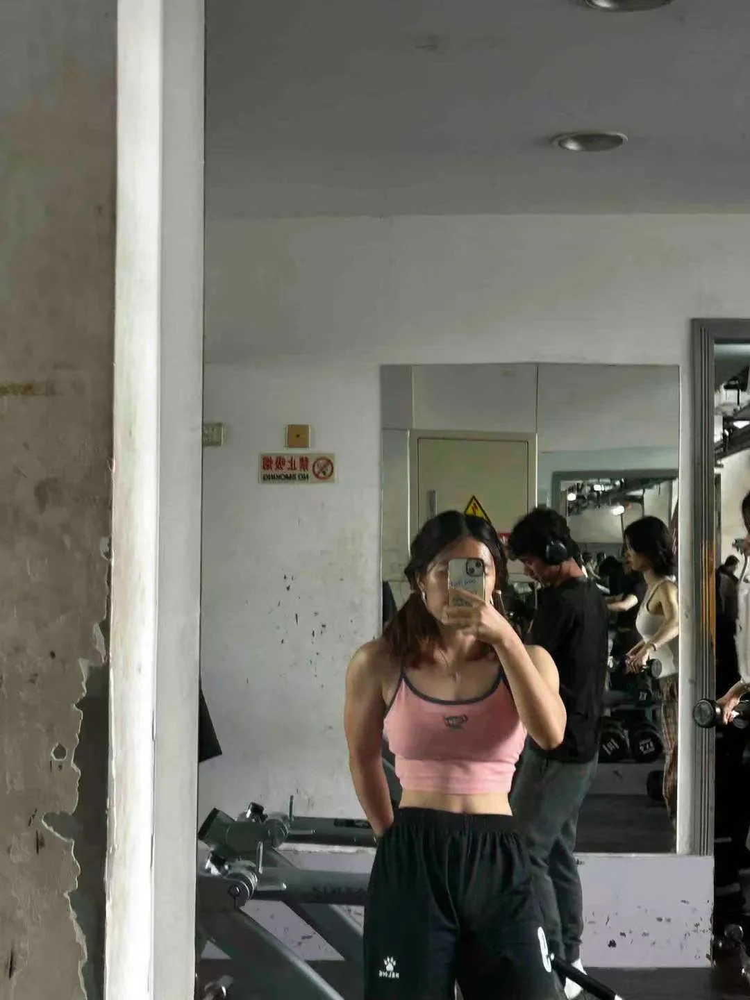
Shoulder day is still my favourite.
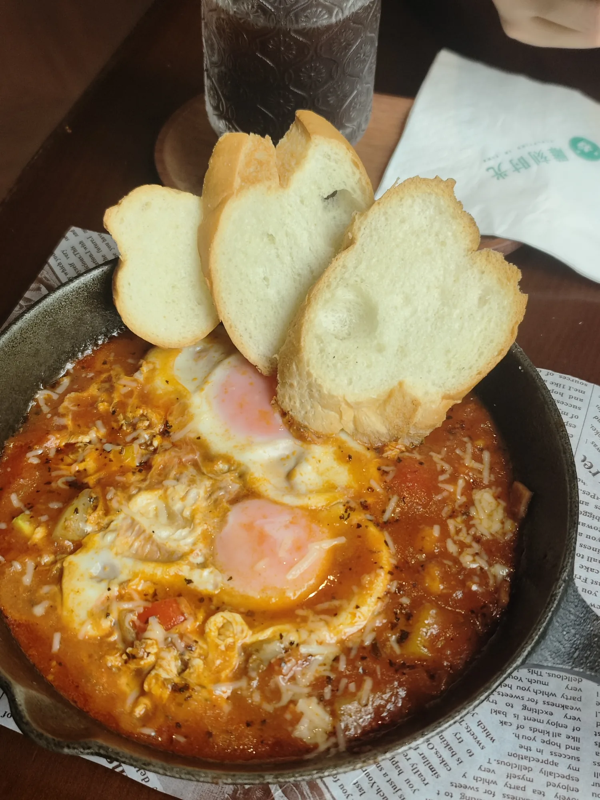
For a moment, I was living like a very happy southern French person.

Colours that make my heart tremble a little.
A little dangerous, a lot of fun.
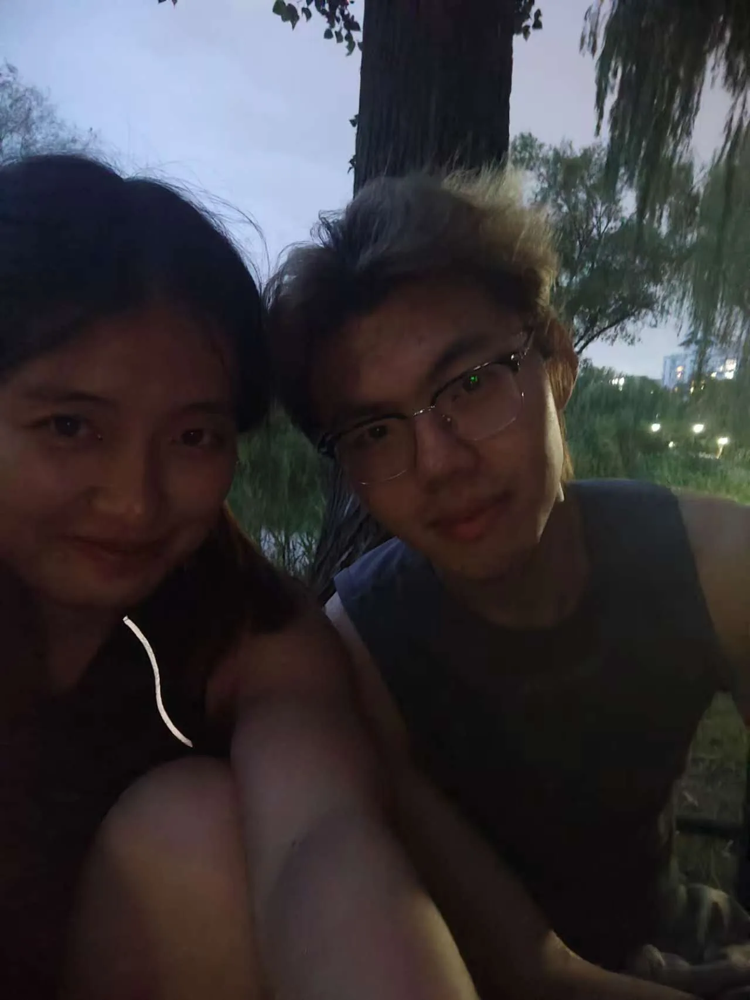
Every walk here gives us something new.
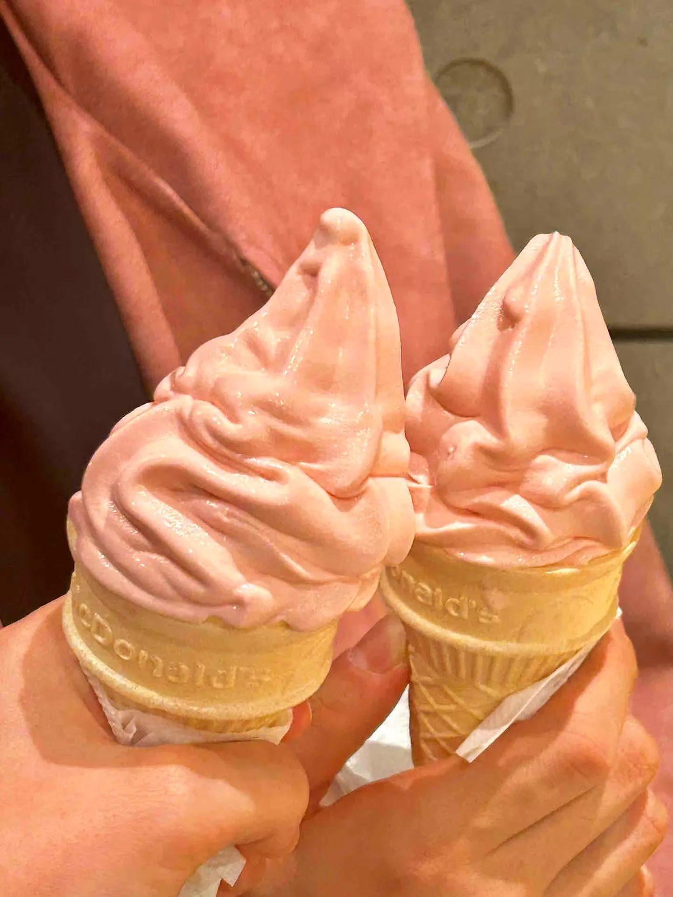
Life passing from strawberry to caramel to hojicha soft serve.
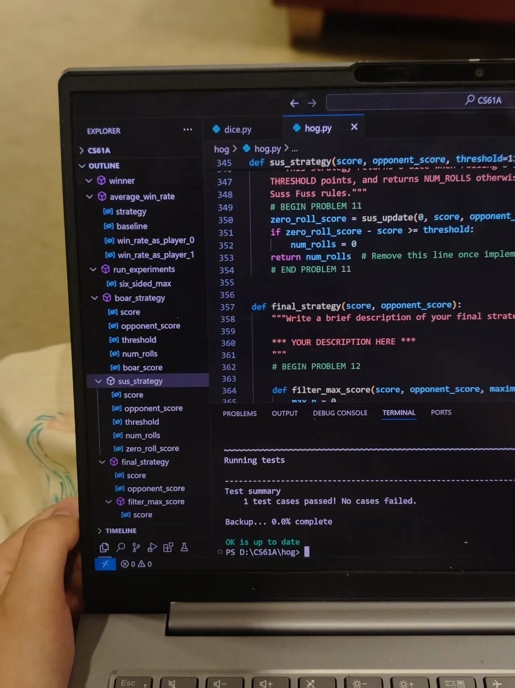
All test cases passed. A tiny miracle.
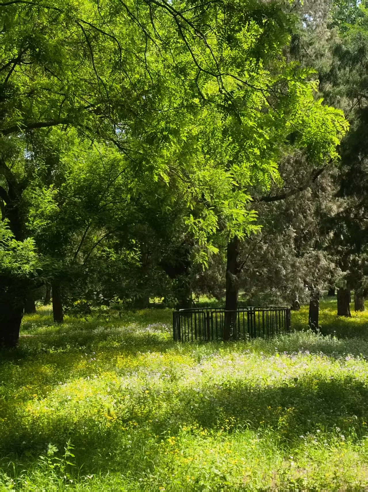
Almost lost inside an afternoon dream.
Lampture live again. Still my favourite band.
I love my sister.
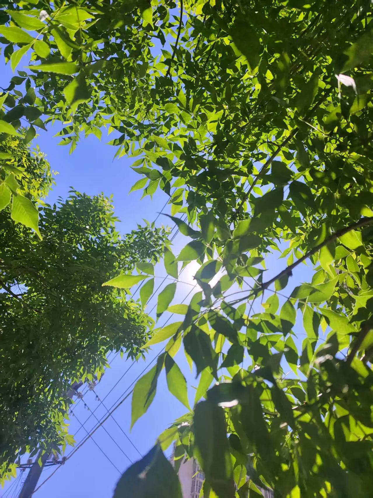
Remember to look up.
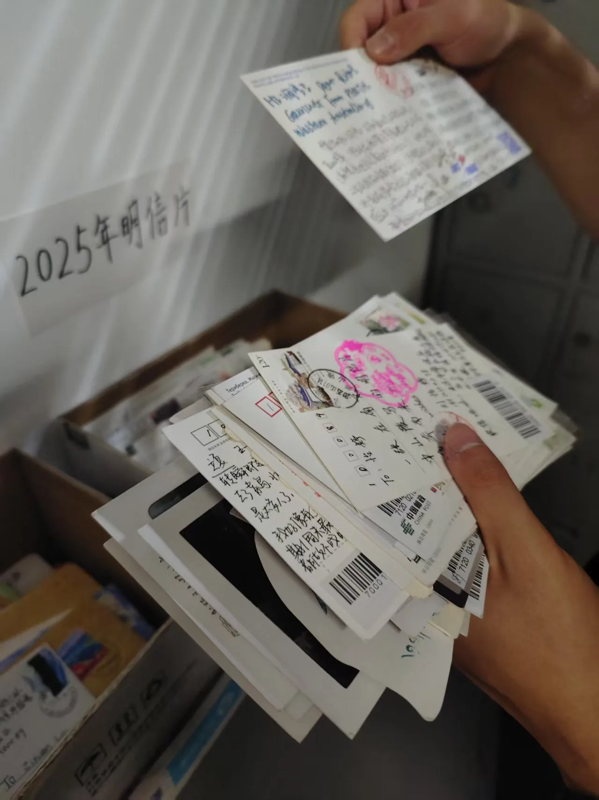
Looking for postcards felt like travelling around the world.
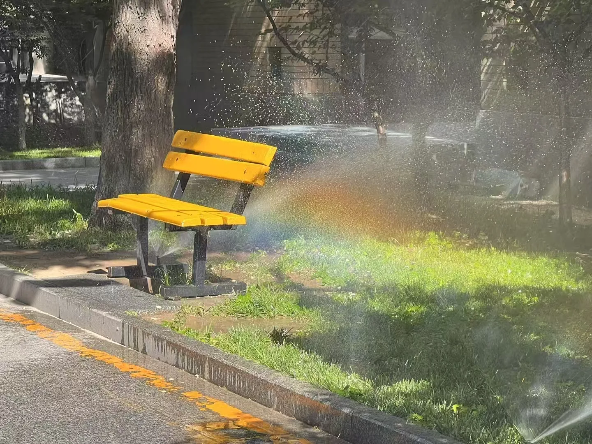
Look, a rainbow!
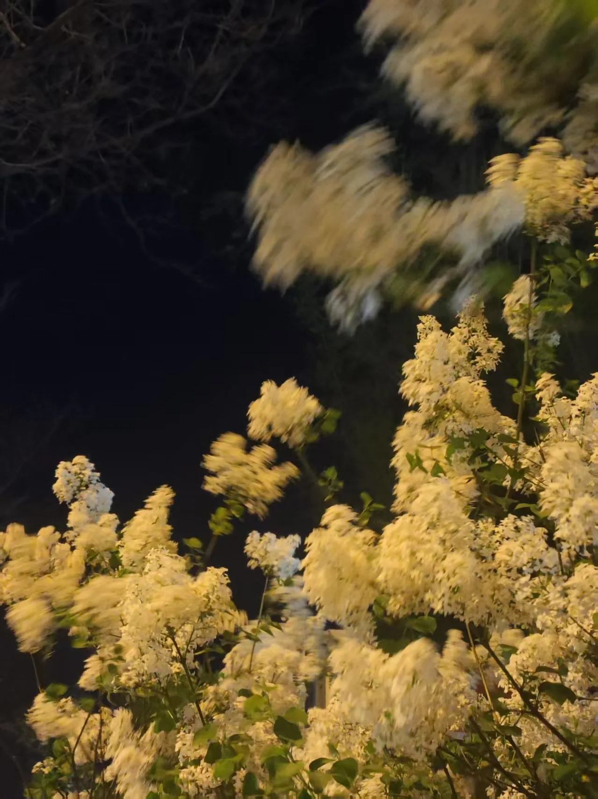
Walking home from the bookshop, healed by lilacs in the night breeze.
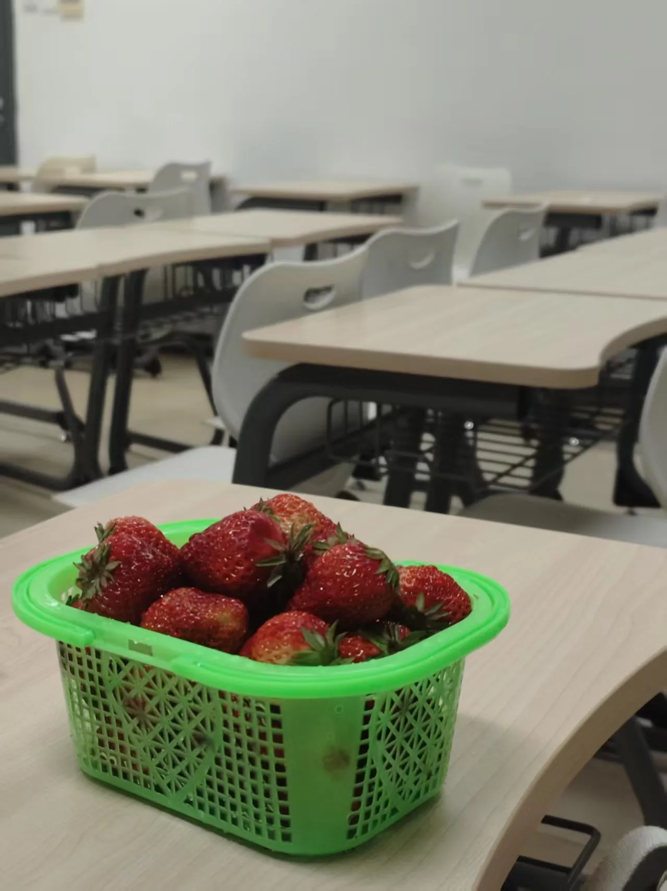
Red strawberries in a green basket: such a strange, lovely collision.